Vender sin existencia
El producto está en el mostrador y el cliente lo tiene en la mano. Ahora se cobra, y compras recibe el aviso de que ese artículo quedó en cero.
Diez ajustes, todos aplicados. El de fondo: el punto de venta ya no bloquea una venta porque el sistema traiga el inventario desfasado. Cobra, avisa a compras y deja el rastro para ajustar.
Todos quedaron aplicados y probados sobre el sistema en operación. Abajo el estado de cada uno; más adelante los detallamos con capturas reales.
El producto está en el mostrador y el cliente lo tiene en la mano. Ahora se cobra, y compras recibe el aviso de que ese artículo quedó en cero.
WhatsApp al momento, el producto entra a las necesidades por ordenar y el faltante queda visible en el tablero de matriz.
Cada cobro con tarjeta dice de qué tipo fue, y el corte los desglosa por separado para cuadrar contra lo que deposita el banco.
Se corrigió el 5 y el 6 que salían rotos en la térmica, y los cobros con tarjeta imprimen dos recibos: cliente y comercio.
Cada encargado tiene su propio NIP de 6 dígitos. Con él autoriza cancelaciones y retiros, y su nombre queda en la bitácora.
Matriz define hasta qué porcentaje de la venta y hasta cuántos dólares se aceptan. El punto de venta avisa antes de cobrar.
F2 consulta precio, F4 cobra, F6 retira, F7 corta caja. Un icono de información muestra la lista completa sin salir del punto de venta.
Se escribe "punto" y el menú se reduce a Punto de venta. Enter entra directo, sin recorrer categorías.
El usuario de acceso pasó a ser opcional: la tienda se da de alta ahora y su cuenta se crea después.
Basta teclear el número del folio, sin el "VTA-" ni los ceros, y la devolución imprime su ticket para el turno.
Este es el punto que más dinero movía de los diez, y el que cambia una regla de criterio, no solo una pantalla.
Lo que pasaba
El cliente llega a caja con el producto en la mano. El cajero lo escanea y el sistema contesta "Stock insuficiente" porque su inventario dice cero.
El producto existe: está ahí. Lo que estaba mal era el número. Resultado: se pierde la venta, el cliente se va molesto y el inventario sigue igual de descuadrado. Negarse no arreglaba nada.
Lo que pasa ahora
Se cobra. El punto de venta avisa en rojo que ese artículo está en cero, pero deja cerrar la venta.
La existencia queda en negativo —que es justo la señal de que hay que ajustar— y el área de compras recibe un WhatsApp con el producto, además de que entra solo a las necesidades por ordenar.

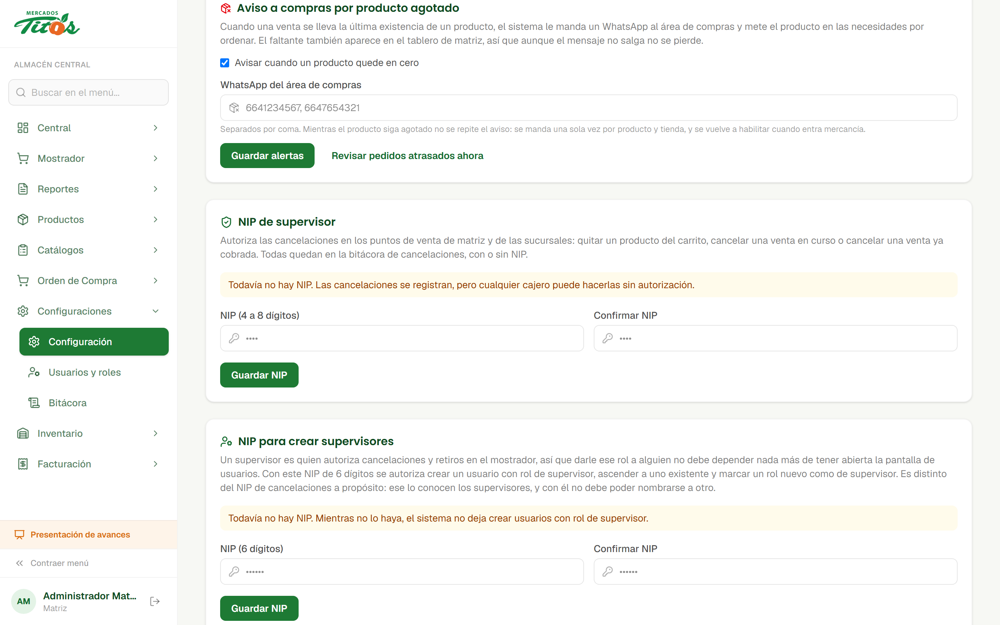
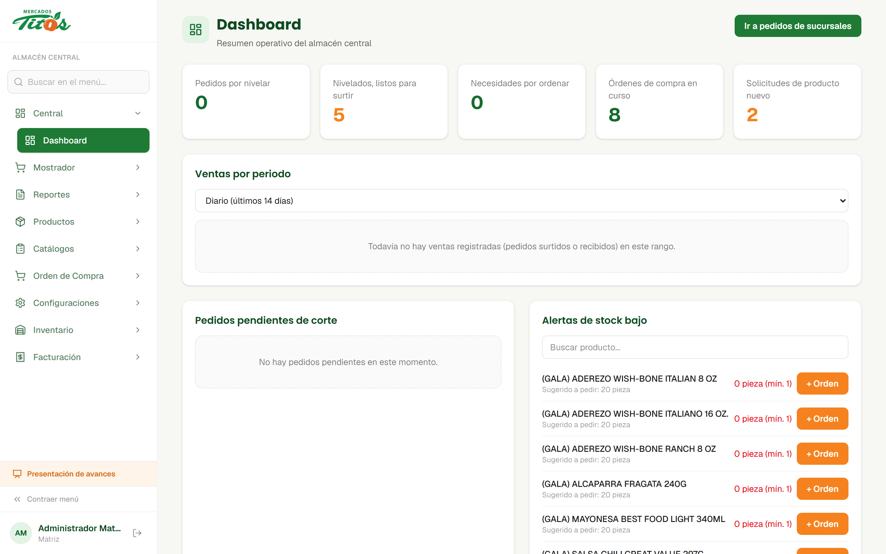
El banco no deposita igual las tres: el débito cae casi en el acto, el crédito a las 24 o 48 horas y American Express va por su propio contrato y con su propia comisión. Con el total junto, el corte cuadra contra la terminal pero no contra la cuenta.
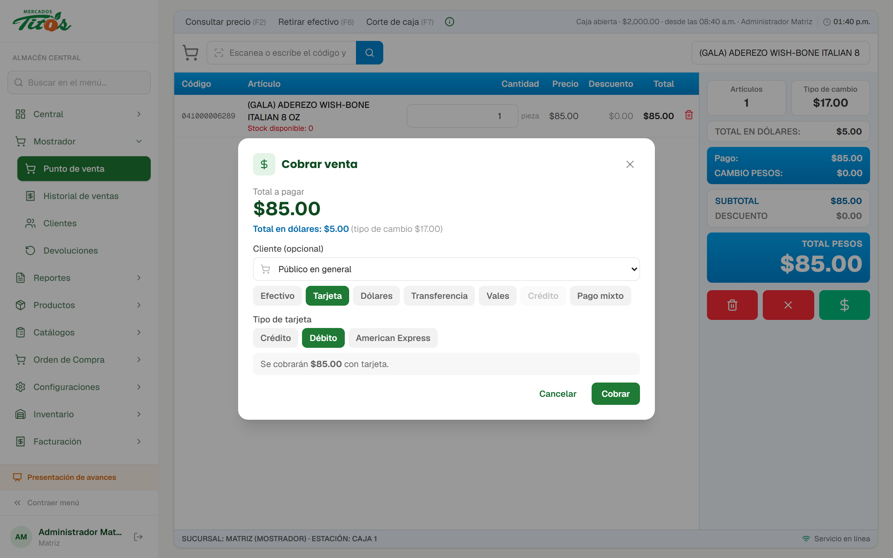
El número de la tarjeta dice la marca (Visa, Mastercard, Amex), pero no dice si es de crédito o de débito. Adivinarlo mandaría el depósito al renglón equivocado, que es peor que preguntarlo.
Los cobros con tarjeta de antes de este cambio aparecen como "Sin tipo identificado" en el desglose, en vez de asignarles uno a la fuerza.
Nos reportaron que en el ticket impreso había dígitos que no se distinguían. Fuimos a ver por qué.
La causa
El ticket se imprimía en Courier New a 11 puntos. Esa tipografía tiene el trazo muy delgado, y a ese tamaño el cabezal térmico se salta puntos: el 5 terminaba pareciendo un 3 y el 6 un 8.
Encima, las líneas de detalle estaban en un gris más claro para "verse ligeras". En papel térmico, lo ligero no se ve: se pierde.
Lo que se cambió
Tipografía con numerales de trazo grueso y el 6 cerrado, cuerpo más grande y todo el documento en seminegrita. Los importes se alinean en columna para que no bailen de renglón a renglón.
Las líneas de detalle ahora bajan de tamaño pero nunca de peso: adelgazarlas era justo lo que rompía los dígitos.
Sale la copia del cliente y la copia del comercio, esta última con línea de firma. El banco pide el pagaré firmado para defender un contracargo, y ese papel no puede depender de que alguien se acuerde de reimprimir.
La venta de contado sigue imprimiendo un solo ticket. Duplicar todas sería tirar el doble de papel en la mayoría de las ventas.
Dos copias: la del cliente y la del turno, con firma y con el día de corte impreso. La del turno se guarda en el cajón y respalda la salida de efectivo.
Hasta ahora había un solo NIP de supervisor para toda la cadena. Servía para exigir autorización, pero no para saber de quién fue. Cuando un corte no cuadra, eso es exactamente lo que se pregunta.
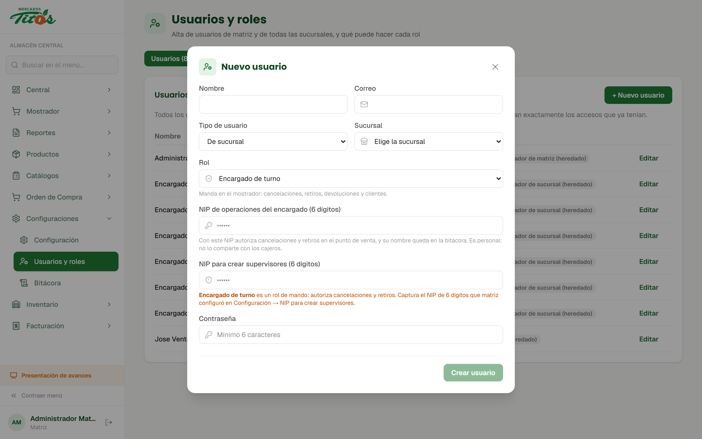
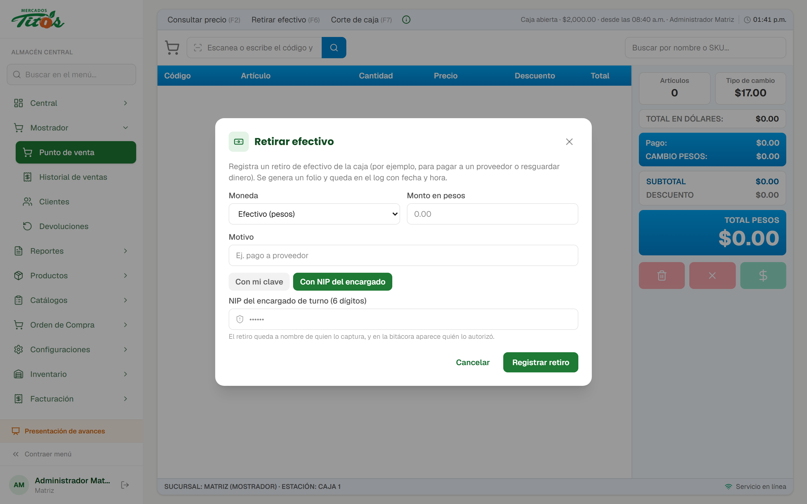
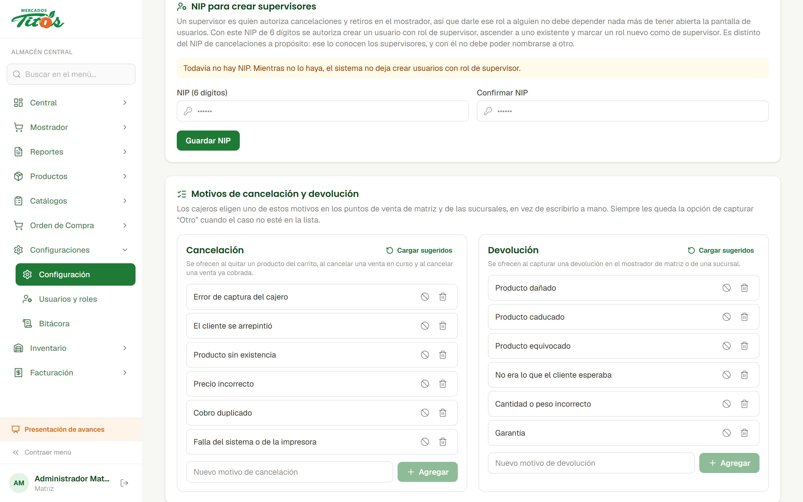
Dos ajustes que se revisan juntos: quien mueve el tipo de cambio es quien decide cuántos billetes verdes aguanta la caja ese día. Por eso quedaron en la misma pantalla, uno debajo del otro.
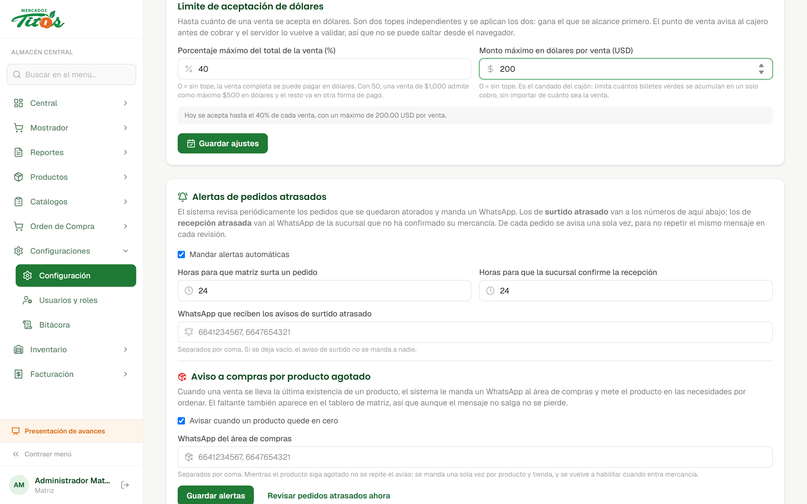
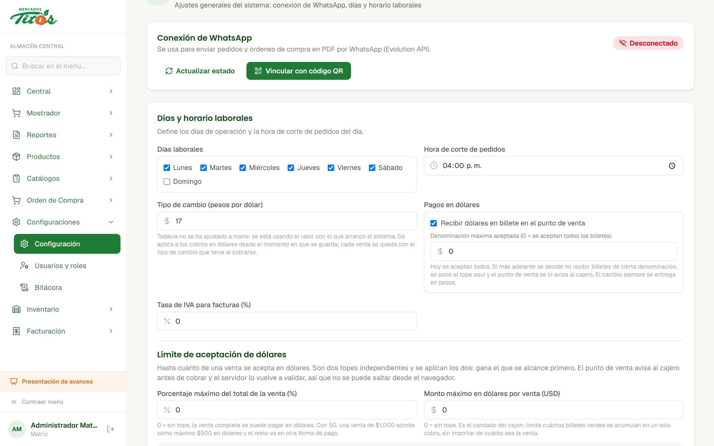
El punto de venta avisa al cajero antes de cobrar, pero el servidor vuelve a aplicar los dos topes. Quien manda es el servidor.
Incluidos los bordes: 100 USD justos pasan, 101 no; y medio centavo de redondeo no rebota una venta legítima.
Tres cambios chicos que se notan todo el día: atajos en el punto de venta, consulta de precio que puede terminar en venta, y un buscador para el menú.
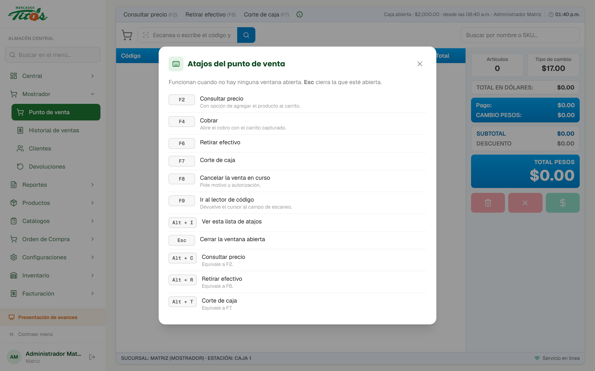
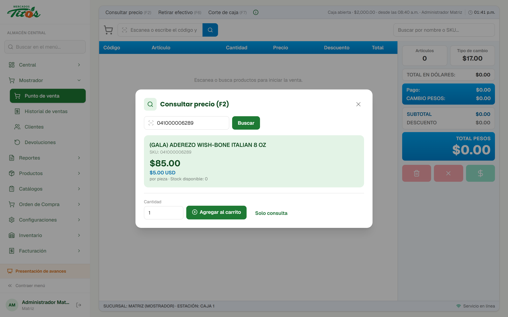
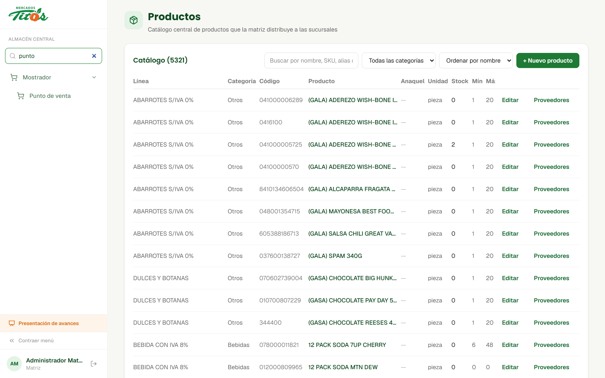
Antes una cancelación parcial se leía "Quitó un producto del carrito" y un importe. Con eso no se distingue un error de captura de alguien vaciando el carrito a propósito.

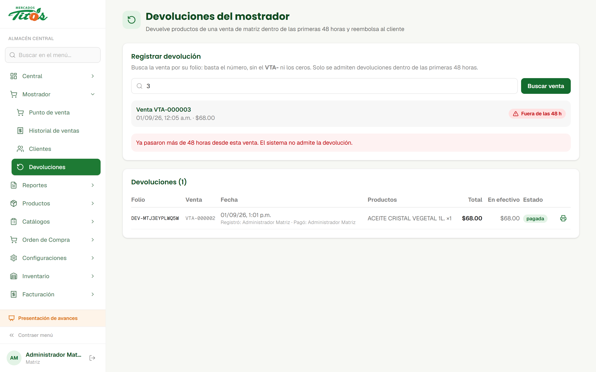
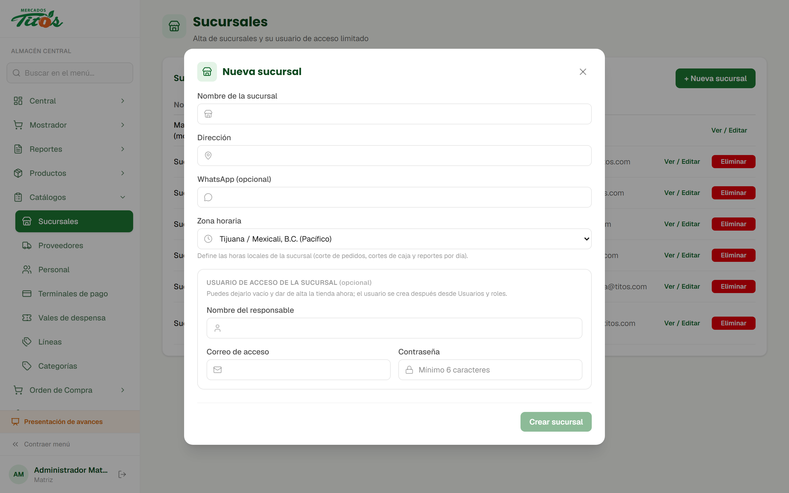
Entrar una vez a Usuarios y roles para que se cree el rol "Encargado de turno", y capturar en Configuración el WhatsApp del área de compras y el NIP para crear supervisores.
Está en su sistema pero no marcado como rol de mando. Si quieren que sus usuarios lleven NIP personal, basta marcarlo en el editor de roles.
Todo lo de esta semana está sobre el sistema en operación.
Las capturas de esta presentación son de su instalación real, no de un demo.